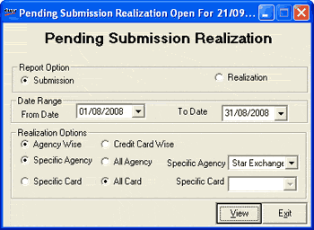

The Pending Submissions/ Realisations report provides information on the pending submissions/ realisations of charge slips made during credit card billing, through collection agencies, for a given period.
The Pending Submissions/ Realisations report prints either the credit card sales made which are not submitted for realisation to the agency, or details of submitted credit card sales not realised by the agency. The report can be printed agency-wise or credit card-wise for a given period. It can be printed for all agencies and credit cards or for a select few.
How to reach: Reports > Cash > Pending Submissions/ Realisations
The Pending Submission Realization window is displayed.

Report Option: Select Submission or Realization to generate the report accordingly.
Date Range: By default, the From Date and To Date are the current Shoper date. You can enter any date range but the To Date cannot be greater than the Shoper date.
Realization Options:
Select Agency Wise or Credit Card Wise to group the report accordingly.
Select Specific Agency or All Agency to include all agencies in the report or generate report for a particular agency. If you have selected Specific Agency, select the agency from the list.
Select Specific Card or All Card to generate the report for all cards or for a particular card. If you have selected Specific Card, select the card from the list.